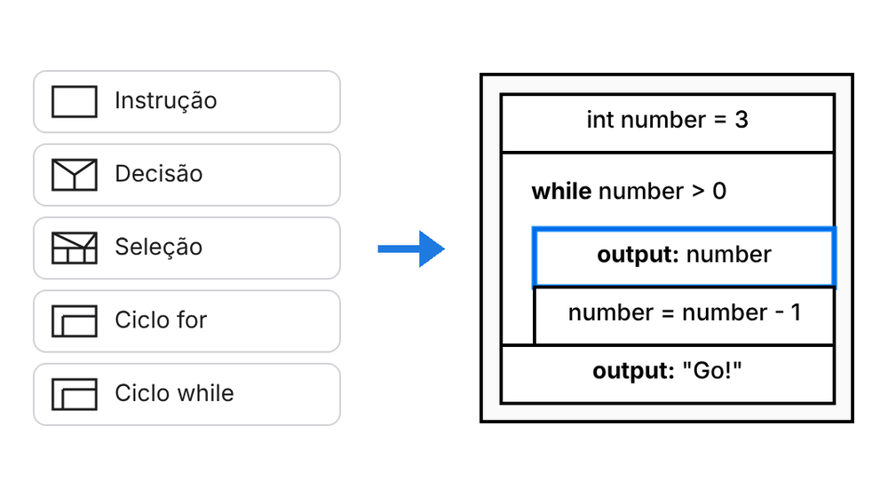
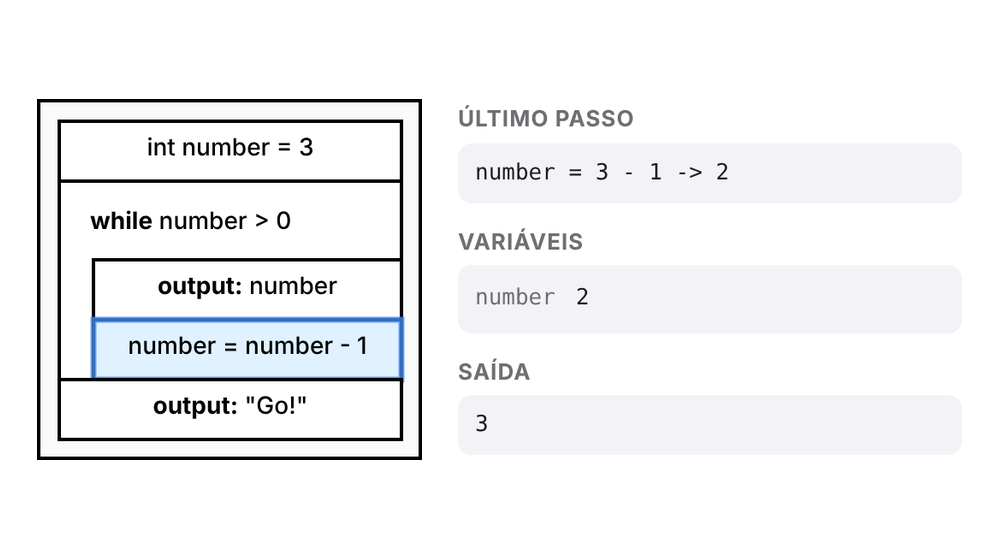
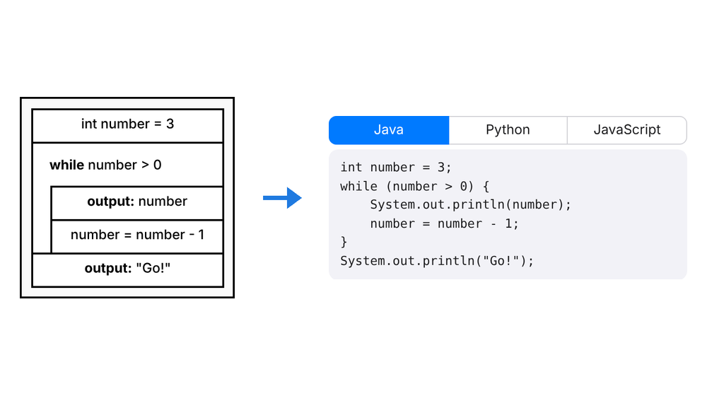
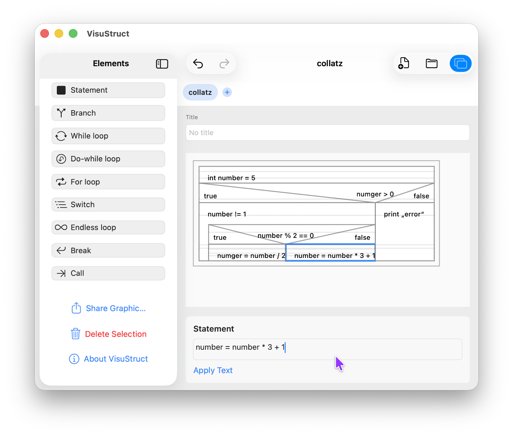
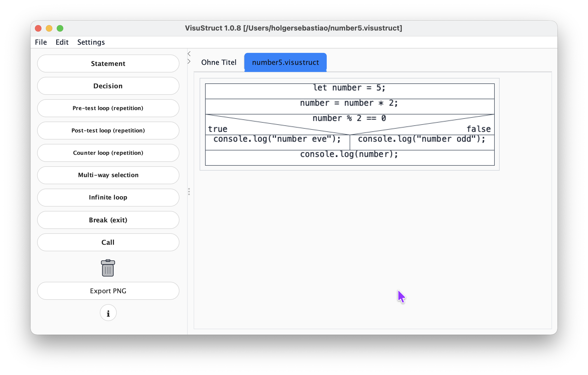

Construir a arrastar
Arrasta instruções, ramificações, ciclos e seleções da paleta para o diagrama e escreve o texto diretamente.
Grátis · sem registo · sem instalar nada
Com o VisuStruct desenvolves algoritmos como estrutogramas Nassi-Shneiderman: arrasta elementos, executa-os passo a passo e converte-os em código Java, Python ou JavaScript.
Funciona no computador, tablet e telemóvel. Os teus ficheiros ficam no teu dispositivo.
Como funciona

Arrasta os blocos para o estrutograma e descreve cada passo com palavras simples ou em código.

Inicia a simulação e acompanha bloco a bloco como as variáveis mudam.

Gera Java, Python ou JavaScript e continua no teu ambiente de desenvolvimento.
Funcionalidades
Um editor pensado para a sala de aula: claro, preciso e sem distrações.
Arrasta instruções, ramificações, ciclos e seleções da paleta para o diagrama e escreve o texto diretamente.
A simulação destaca o bloco ativo e mostra variáveis e saída, para veres logo se o teu algoritmo funciona.
Escreves código Java e o estrutograma vai-se construindo em tempo real – e ao contrário também. O VisuStruct traduz ainda para Python e JavaScript.
Guarda como PNG, SVG ou PDF, ou imprime diretamente, para fichas e testes.
A interface e as lições estão disponíveis em alemão, inglês e português.
Sem conta e sem envios. O teu trabalho é guardado como ficheiro .visustruct no teu dispositivo.
Área de aprendizagem
Ao lado do editor há uma área de aprendizagem: as lições explicam como usar o editor e o que são a sequência, a ramificação e os ciclos. Experimentas logo ao lado o que lês.
O teu progresso fica no teu navegador. As lições estão disponíveis em alemão, inglês e português.

Novo: VisuBot
Com o VisuBot programas o robô educativo mBot2 da Makeblock, como estrutograma ou em Java. Sem robô, ele anda num simulador 3D. Com o mBot2 verdadeiro ligado por cabo USB, ele acompanha cada passo.
Só precisas do mBot2 para o robô verdadeiro. O simulador funciona em qualquer lado.

Outras versões
Todas as versões usam o mesmo formato .visustruct. Começa no navegador e continua na app, ou ao contrário.


Download em .jar (requer Java, por exemplo Adoptium / Eclipse Temurin).
Transferir a app JavaPensa primeiro na lógica e no fluxo. Depois traduzes a mesma estrutura para a linguagem de programação que preferires, passo a passo e de forma clara.
Experimentar agora